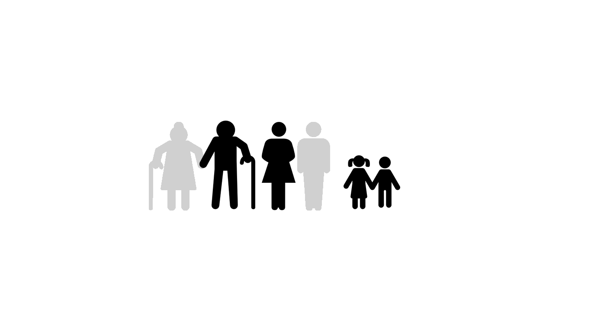
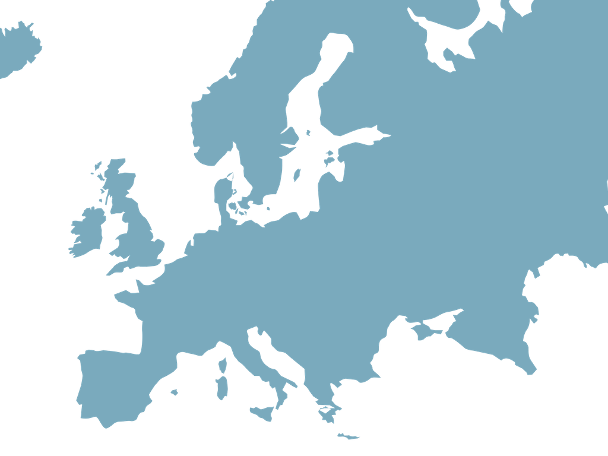
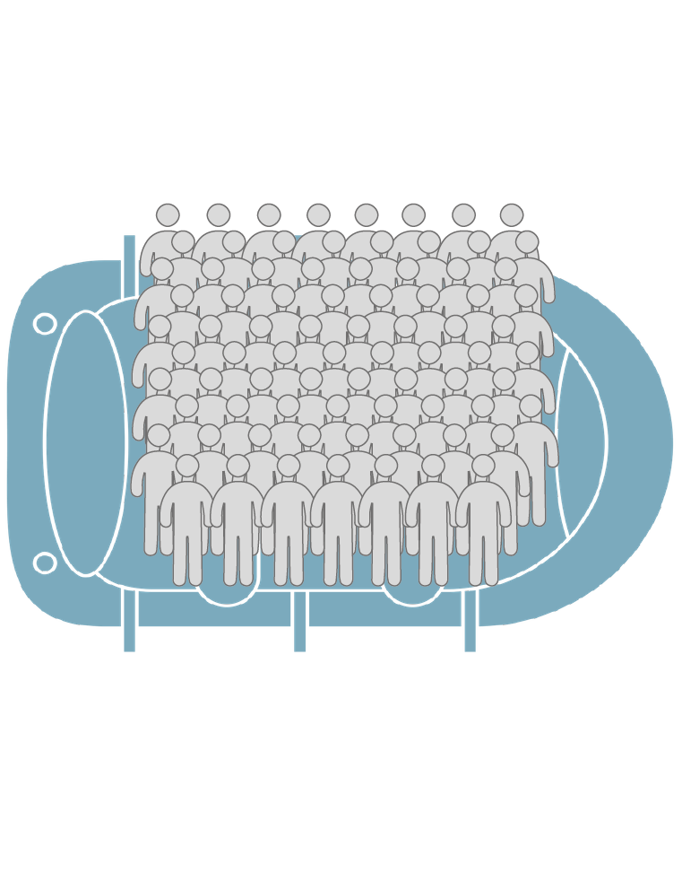
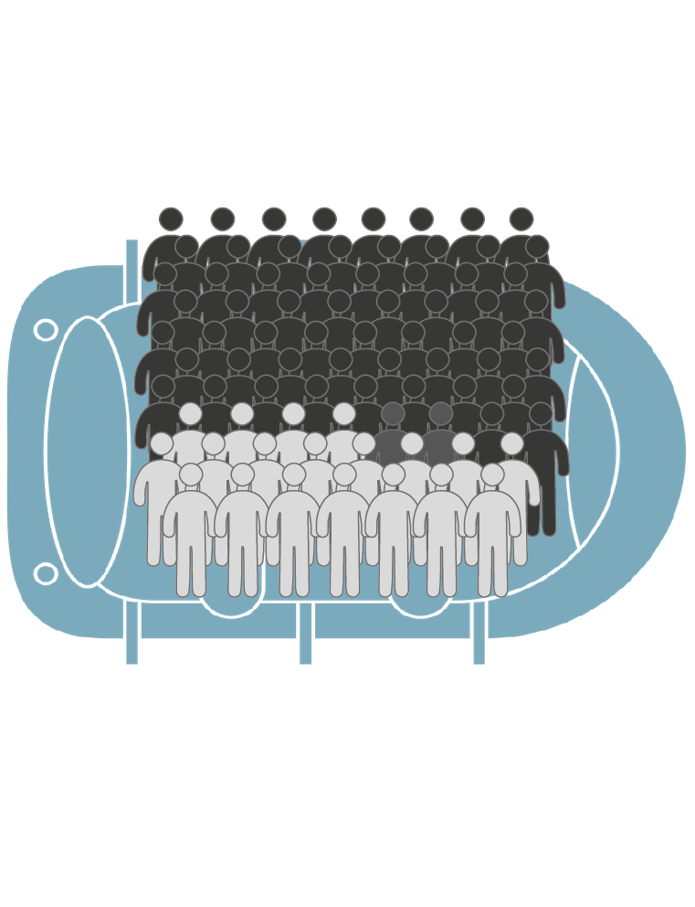
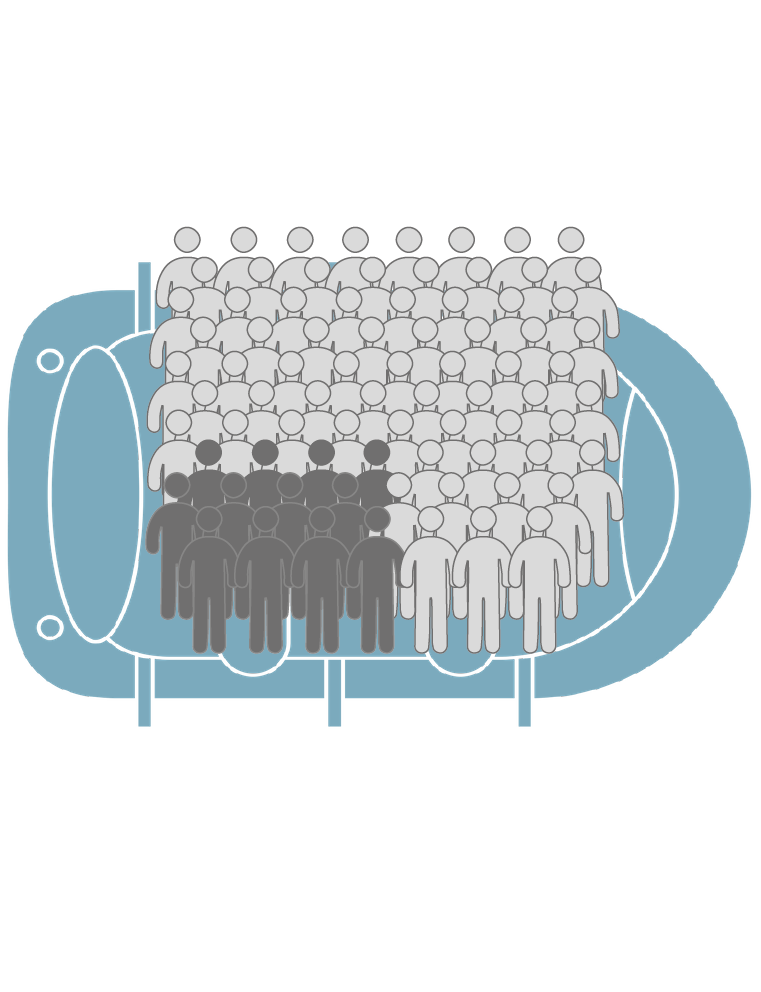
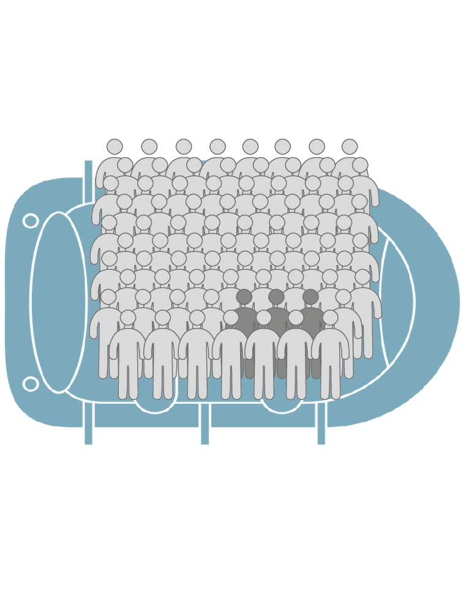
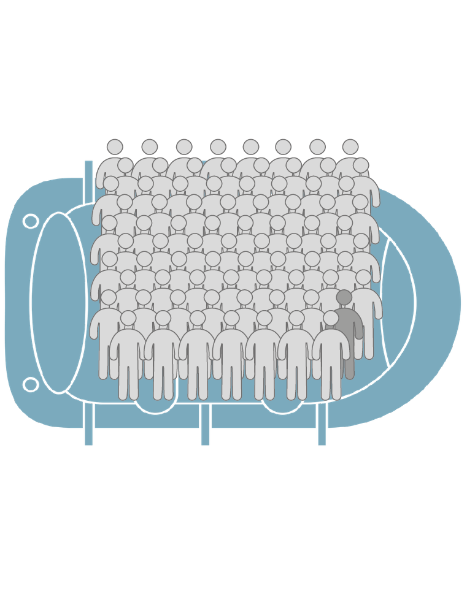
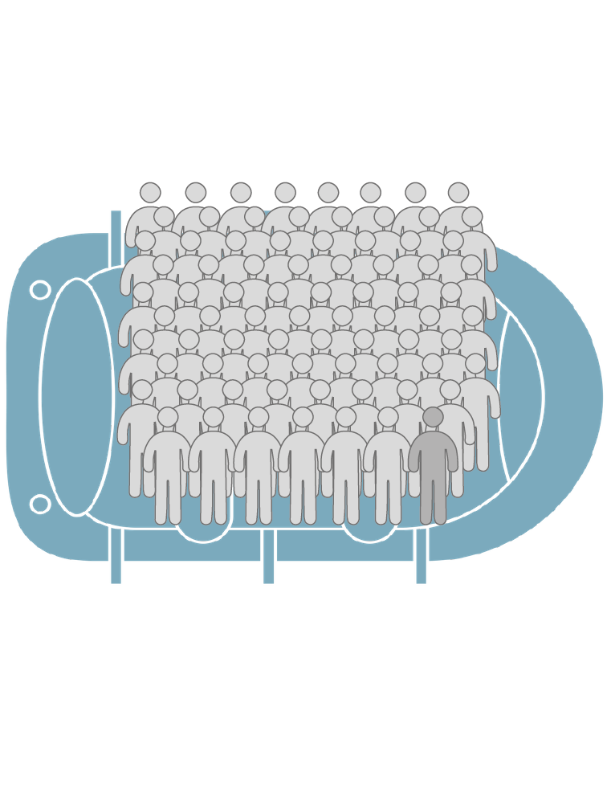
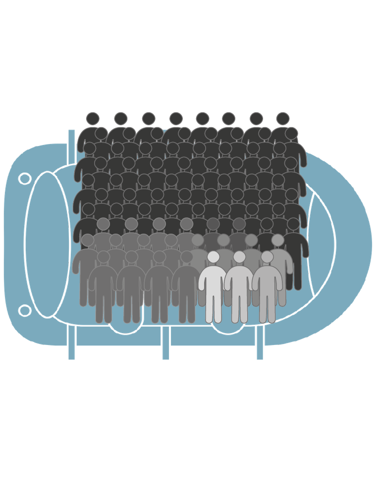
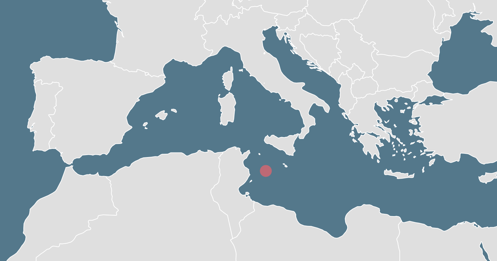

Missing Migrants Project
Data vizualisation project at Télécom ParisTech
Created by Arlène Botokro, Mathilda Di Matteo, Marine Hévin and Florent Votte
December 2017
This is a family.
They went on a journey !
But upon their arrival, 2 people were missing.

Their journey was a migration
Migrant : Any person who is moving or has moved across an international border or within:
- A State away from his/her habitual place of residence, regardless of the person’s legal status.
- Whether the movement is voluntary or involuntary.
- What the causes for the movement are; or what the length of the stay is.
It includes
migration of
refugees,
displaced persons,
economic migrants, and persons moving for other purposes, including family reunification.
By the end of 2016,
65.6 million
individuals were forcibly
displaced worldwide
Source: UNHCR
This is equivalent to the
population of the UK
65.6 million
Source: UK Office for National Statistics
By the end of 2016,
there were also
22.5 million
refugees in the world
Source: UNHCR
This is more than 10 times
the population of Paris
Source: INSEE

In 2017,
between
January and July only
more than
100 000 people
Successfully
reached Europe
by sea.
But what about
the ones
that never arrived
to the other shore?
Nowadays, travelling through the Mediterranean is the most dangerous path in the world for migrants
For those migrants, mainly coming from Syria and the Middle East trying to reach Western Europe, there is a choice to make between two irregular migration routes : the Central or the Eastern route.
Despite the increase in migrant flows through the eastern Mediterranean since 2015, the central Mediterranean remains the more deadly route.
Let us take a look at the dangers facing migrants on each of those routes.
First, let us focus on the Central Mediterranean route
Throughout their journey, migrants on the Central Mediterranean route will face many dangers that
may lead to their death.

Since 2014, 2844 migrants have drowned on this route and 91 are presumed drowned. Drowning is
therefore the main cause of death, with an overwhelming majority.

The cause of 599 deaths still remains unknown or unspecified, due to the difficulty to gather
information and find bodies.

179 migrants died of suffocation or asphyxiation.

62 died of hyperthermia or burnings.

57 died of hypothermia.

Finally, about 70 others died of less frequent causes, mostly linked to the harsh conditions of
their migration : starvation, dehydration, violence on board, lack of access to medical aid...

The Eastern route, increasingly used by migrants since 2015, is a lot less dangerous.
By taking the Eastern route, migrants cross from Turkey to Greece and face the most common cause of death on this path : drowing too and the second is vehicle accident
Now, let’s go back to the family we were following.
This tragic journey is unfortunately only one among many.
Suppose a boat of 100 persons
At their arrival,
20 will be missing
19 will be dead


A few months after they arrived at their final destination, the family got news from a friend they met during their migration: one of their missing relatives was dead.
Some will never know what happened to their relatives.
Others will receive a call.
Those are the migrants you daily hear about in the news
For example, the Lampedusa catastrophe, during which 368 people died in 2013, motivated the Missing Migrant Project.

The stakes are high. There is a need to collect information from newspapers, aggregate data coming from thousands of voluntaries involved in the study of migrations flows or even in the rescue.
This information is incredibly hard to collect and analyse, but things get done thanks to the work of thousands of UN workers, journalists, NGOs, migrants witnesses...
Our goal is to make people realize the extent of the phenomenon in order to act. How can you act?
- As a citizen, you can engage in pushing for welcoming and integrating policies
- As a policy maker, in taking further actions to protect and shelter migrants
- Or just as a human being you can engage in helping migrants searching for asylum in your country
Special thanks to:
Samuel Huron